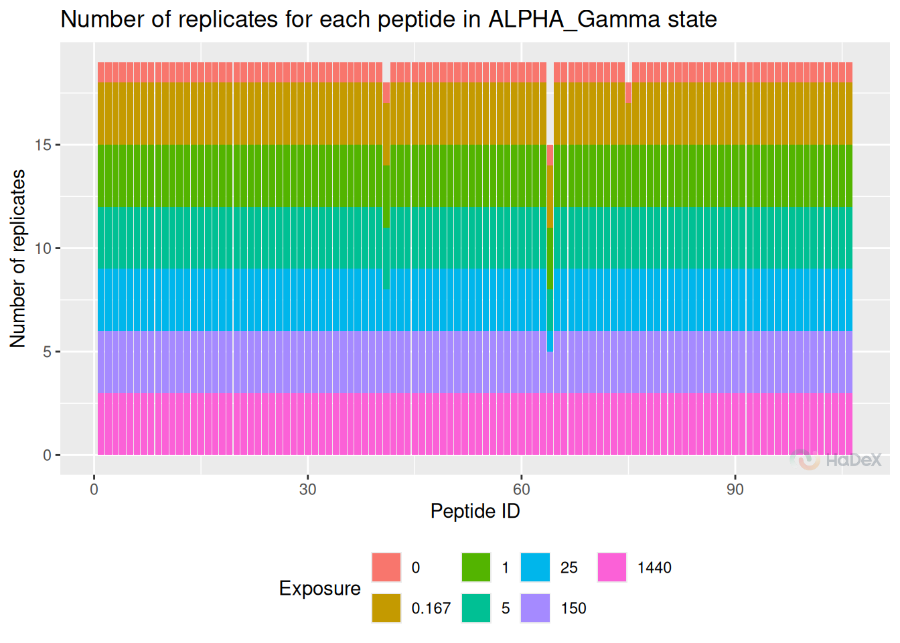
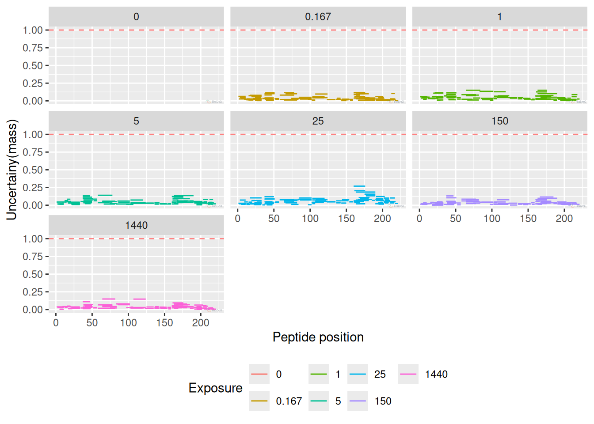
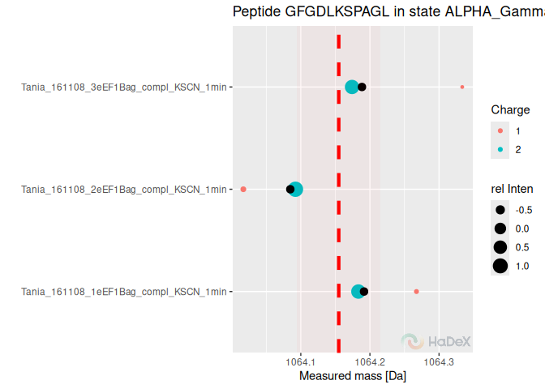
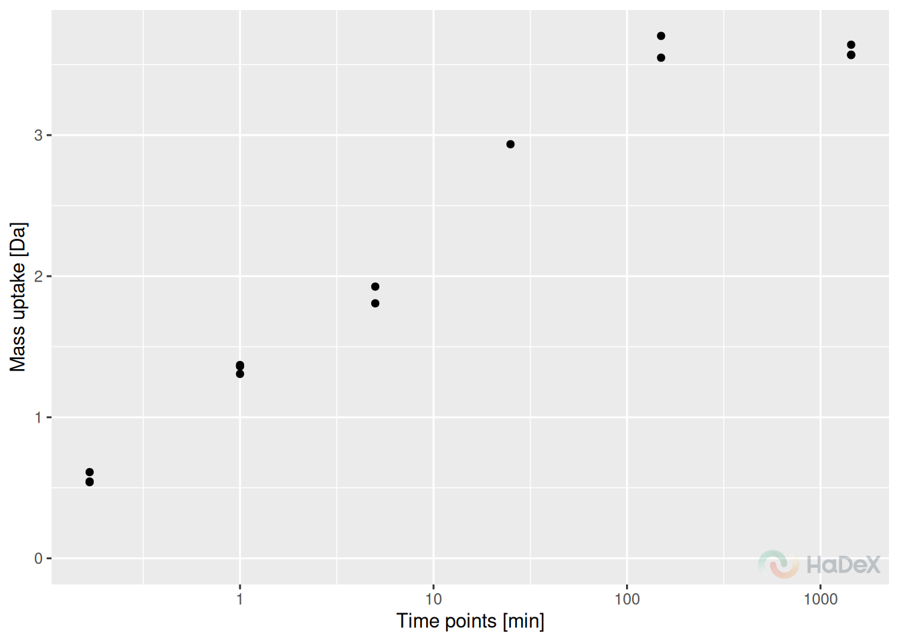
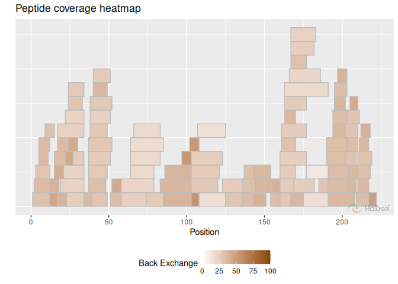

Quality control
quality_control.RmdData analysis is vital step, but firstly, we must make sure that the experiment was conducted correctly. How to do that using HaDeX functionalities? There are multiple ways to do that. Unfortunately, our example data is good quality, but we will discuss possible indicators of data that needs to be re-checked.
Replicates
Firstly, we check the number of replicates. Although the experiment is conducted in known number of times, sometimes during the manual curation of isotopic envelopes, some of the spectras are disqualified. Here, we check the remaining number of replicates of the already curated dataset.
It is advised to have at least three replicates of the experiment. Lesser number limits the statistical analysis - e.q. for calculating P-value using T-student test minimum of three replicates are needed. If there are only two replicates, the uncertainty can be calculated.
In the example plot below, we see that there are three peptides in this state that are lacking values. One peptide - with considerably lack of replicates potentially should be eliminated from the peptide pool. Majority of peptides have a stable number of replicates - in this case three, with exception of no-deuterated control sample, measured only once.
rep_dat <- create_replicate_dataset(alpha_dat)
plot_replicate_histogram(rep_dat)
Uncertainty
Uncertainty plot presents the uncertainty of the measurement for one state at the time. In this case, we present the time points separately. There is no uncertainty calculated for time point 0 min, as it is treated as undeuterated control and measured only once. For other time points, as the measurement was conducted in triplicate, there are values for measured mass. As the measured mass is in daltons, also the uncertainty is presented in daltons. Thus, we can establish a threshold of 1 dalton - indicating one exchange between proton and deuter. Any uncertainty exceeding - or coming close - to this threshold should be carefully checked.
For correctly conducted experiment, the uncertainty for all peptides in all time points should be close to 0.
In the example below, all measurement have acceptable level of uncertainty. Of course, those values differ depending on the region or peptide length, but overall are not exceeding 0.25 Da.
plot_uncertainty(alpha_dat, state = "Alpha_KSCN")
Measurements
Once we have the overview of the situation, we can dig deeper into the peptides of interest.
Below, we present the measurement variability plot for peptide
“GDGDLKSPAGL” in one state, for three replicates.The process of two-step
aggregation is described in the article transformation, but
this plot allows investigation of each measurement.
Here, in case of peptide “GDGDLKSPAGL”, there were only two possible charge values: 1 and 2. The mass was measured for each of them separately, and the centroid value from isotopic envelope was calculated, as well as the appropriate intensity. On the Y axis of the plot, there are replicates: and each replicate has its two points for each charge - with colors indicating charge and size indicating intensity. Then, those two values within replicate are aggregated - as a weighted mean, with intensity being the weight. For each replicate we have now one value - black dot. Those values are averaged with accompanied standard deviation - our final aggregated mass measurement from all the replicates. The final value is shown as the horizontal dotted line, with its sd value indicated by the red area.
plot_peptide_mass_measurement(alpha_dat)
The peptide recognized as under-measured using previous plot, is peptide “CVRSIQA” in state eEF1B. We analyze the mass uptake with regards to replicates (aggregated charge) and we see that for time point 25 min only one measurement was accepted, and for other time points two, thus blocking the possibility of calculating statistical significance when using this peptide in comparative analysis.
plot_replicate_mass_uptake(alpha_dat, sequence = "CVRSIQA", aggregated = TRUE)
Back-exchange
Important measure of quality of experiment is back-exchange. Usually, expected value of back-exchange should be around 30%, possibly higher for shorter peptides.
bex_dat <- calculate_back_exchange(alpha_dat, state = "Alpha_KSCN")
plot_coverage_heatmap(bex_dat, value = "back_exchange")
#> Ignoring unknown labels:
#> • colour : "Exposure"